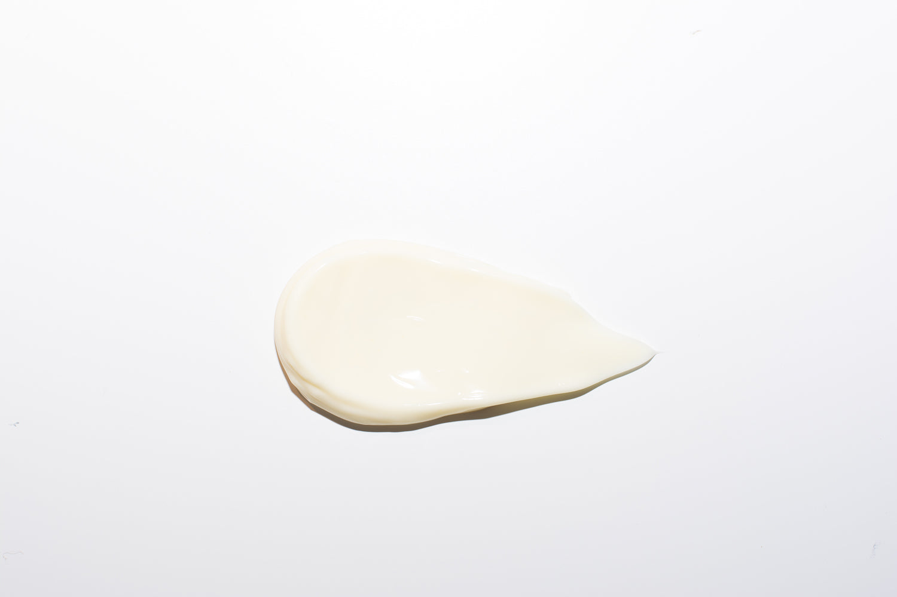
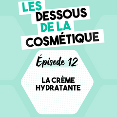

Quelle Crème hydratante acheter ?

Acheter une crème hydratante.
Est-ce utile ? Et pourquoi ?
Acheter une crème hydratante est très utile pour votre peau.
En effet, pour conserver une belle peau, il est indispensable d'appliquer quotidiennement une crème hydratante. Encore faut-il opter pour le produit convenant le mieux à son type de peau.
Les Ingrédients dans une Crème Hydratante
Selon votre type de peau, il vaut mieux éviter certains ingrédients.
Si peau sensibles, éviter allergènes (présent dans parfum), ou autres molécules pouvant êtres irritantes, par exemple : dibutyl adipate, méthylpropanediol, butylène glycol ou C 12-13 pareth 23.
PHOTO
Il y a aussi certains ingrédients à faire attention selon votre sensibilité, comme les perturbateurs endocriniens, par exemple : le propylparabène et le cyclopentasiloxane, qu'on retrouve souvent dans les crèmes hydratantes.
Pour en savoir plus, vous pouvez écouter l'épisode 12 du podcast "Les Dessous de la Cosmétique" qui explique tout sur les ingrédients d'une crème hydratante. L'épisode a été écrit et réalise par Julie Magand Castel, chimiste et cosmétologue.

Pour voir tout les épisodes réalisés, dirigez-vous sur notre page de podcast.
Votre type de peaux
Il existe différents type de peaux. Pour trouver la crème hydratante qui vous convient le mieux, il est préférable de connaître votre type de peau avant l'achat.
Peau normale : ni sèche, ni grasse, sans imperfection. La zone T (front, nez, menton) peut briller un peu dans la journée.
Peau sèche : c'est une peau qui manque de lipide. Les symptômes sont des tiraillements en continu, une peau rêche au toucher, des sécheresses cutanés visibles, des pores peu visibles et un teint terne.
Peau grasse : cela est dû à la production excessive de sébum sur l'ensemble du visage. La zone en T a un fort aspect brillant et gras. La peau devient dès lors un terrain propice à l'apparition de comédons, boutons et impuretés qui obstruent les pores et étouffent la peau. Le grain de peau est irrégulier et plus épais et les pores sont dilatés et visibles. Il faut absolument hydrater une peau grasse.
Peau mixte : elle présente des brillances sur la zone T (front, nez, menton) tandis qu'elle est plutôt normale à sèche et déshydratée sur les joues et le reste du visage. Des sensations de tiraillements et d'inconfort peuvent être ressenties au niveau des joues et elle peut présenter des imperfections. Elle a donc des besoins différents selon les zones du visage.
Les allégations et certifications cosmétiques
Comos Organic, cosmos natural, certifiés bio, ecocert, cosmébio, nature et progés, natrue,
La Crème faîte pour vous
La Crème GINKGO SACRÉ - Hydrate et Embellit l'Âge